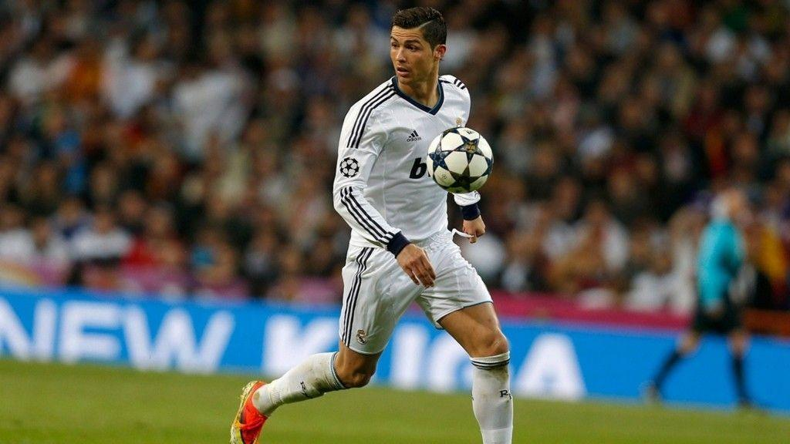
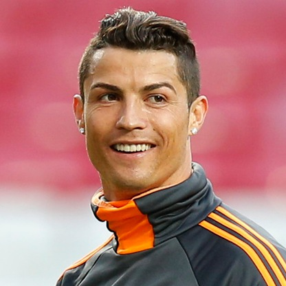
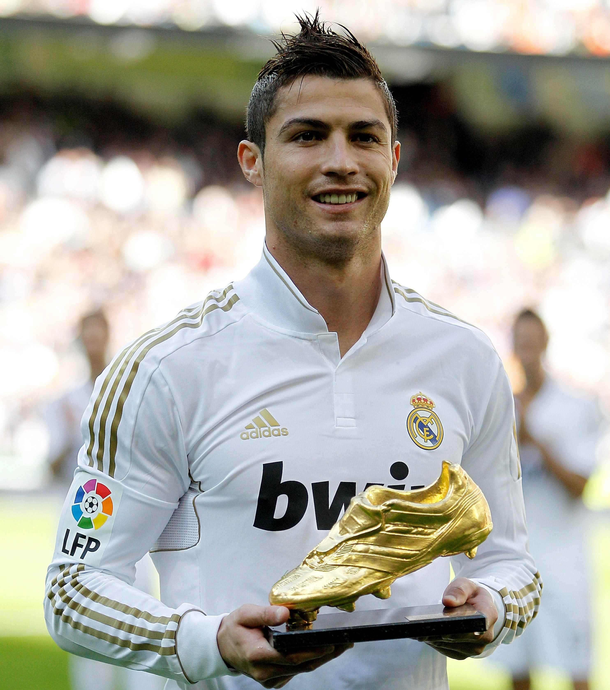

Cristiano Ronaldo dos Santos Aveiro GOIH, ComM (Portuguese pronunciation: born 5 February 1985) is a Portuguese professional footballer who plays as a forward for Spanish club Real Madrid and the Portugal national team. Often considered the best player in the world and widely regarded as one of the greatest of all time,[note 1] Ronaldo has five Ballon d'Or awards,[note 2] the most for a European player and is tied for most all-time. He is the first player in history to win four European Golden Shoes.

He has won 25 trophies in his career, including five league titles, four UEFA Champions League titles and one UEFA European Championship. A prolific goalscorer, Ronaldo holds the records for most official goals scored in the top five European leagues (377), the UEFA Champions League (114), the UEFA European Championship (29) and the FIFA Club World Cup (7), as well as most goals scored in a UEFA Champions League season (17). He has scored more than 600 senior career goals for club and country.

Ronaldo was born in São Pedro, Funchal, and grew up in the Funchal parish of Santo António,[4][5][6] as the youngest child of Maria Dolores dos Santos Aveiro, a cook, and José Dinis Aveiro, a municipal gardener and a part-time kit man.[7] His second given name, "Ronaldo", was chosen after then-U.S. president Ronald Reagan.[8] He has one older brother, Hugo, and two older sisters, Elma and Liliana Cátia.[2] His great-grandmother on his father's side, Isabel da Piedade, was from São Vicente, Cape Verde.[9] Ronaldo grew up in a Catholic and impoverished home, sharing a room with his brother and sisters. As a child, Ronaldo played for amateur team Andorinha from 1992 to 1995,[11][12] where his father was the kit man,[13] and later spent two years with Nacional.
Cristiano Ronaldo dos Santos Aveiro GOIH, ComM (Portuguese pronunciation: born 5 February 1985) is a Portuguese professional footballer who plays as a forward for Spanish club Real Madrid and the Portugal national team. Often considered the best player in the world and widely regarded as one of the greatest of all time,[note 1] Ronaldo has five Ballon d'Or awards,[note 2] the most for a European player and is tied for most all-time. He is the first player in history to win four European Golden Shoes.
He has won 25 trophies in his career, including five league titles, four UEFA Champions League titles and one UEFA European Championship. A prolific goalscorer, Ronaldo holds the records for most official goals scored in the top five European leagues (377), the UEFA Champions League (114), the UEFA European Championship (29) and the FIFA Club World Cup (7), as well as most goals scored in a UEFA Champions League season (17). He has scored more than 600 senior career goals for club and country.

He has won 25 trophies in his career, including five league titles, four UEFA Champions League titles and one UEFA European Championship. A prolific goalscorer, Ronaldo holds the records for most official goals scored in the top five European leagues (377), the UEFA Champions League (114), the UEFA European Championship (29) and the FIFA Club World Cup (7), as well as most goals scored in a UEFA Champions League season (17). He has scored more than 600 senior career goals for club and country.
Born and raised on the Portuguese island of Madeira, Ronaldo was diagnosed with a racing heart at age 15. He underwent an operation to treat his condition, and began his senior club career playing for Sporting CP, before signing with Manchester United at age 18 in 2003. He helped United win three successive Premier League titles, a UEFA Champions League title, and a FIFA Club World Cup. By age 22, he had received Ballon d'Or and FIFA World Player of the Year nominations and at age 23, he won his first Ballon d'Or and FIFA World Player of the Year awards. In 2009, Ronaldo was the subject of the most expensive association football transfer[note 3] when he moved from Manchester United to Real Madrid in a transfer worth €94 million (£80 million).
| Personal information | |
|---|---|
| Full name | Cristiano Ronaldo dos Santos Aveiro |
| Date of birth | 5 February 1985 (age 33) |
| Place of birth | Funchal, Madeira, Portugal |
| Height | 1.87 m (6 ft 2 in) |
| Playing position | Forward | Club information |
| Current team | Real Madrid |
| Number | 7 | Youth career |
| 1992-1995 | Andorinha |
| 1995-1997 | Nacional |
| 1997-2002 | Sporting CP |